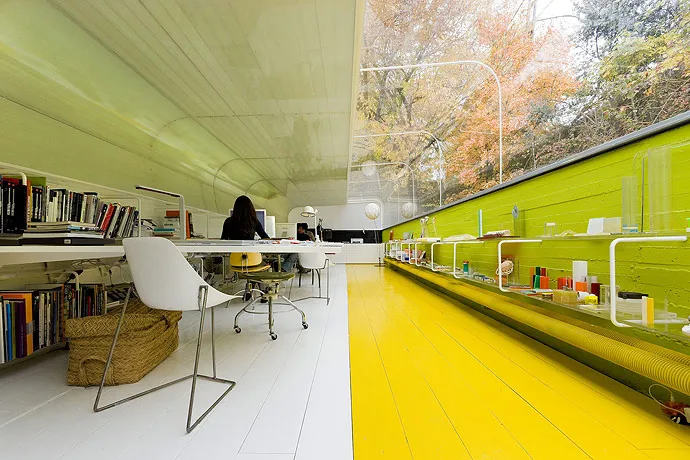
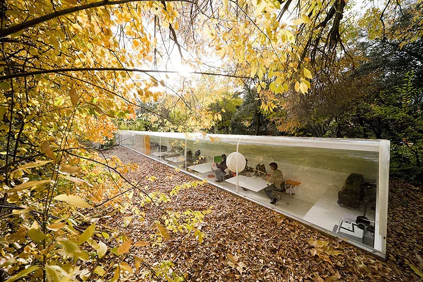
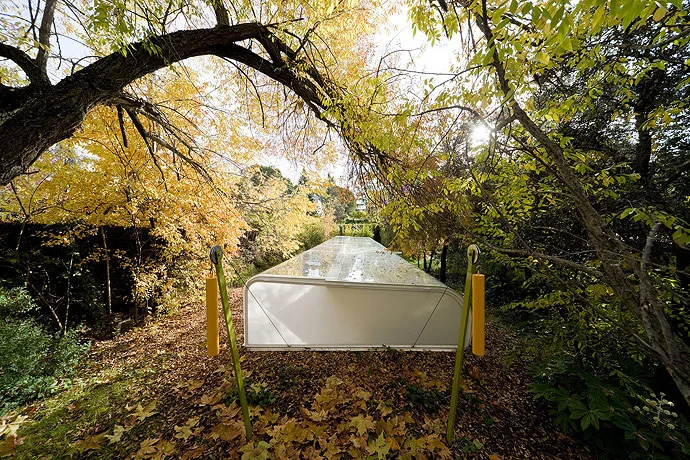
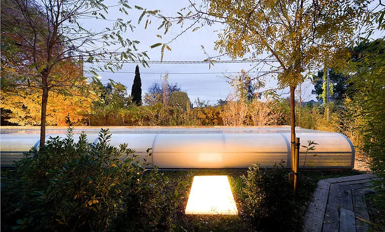
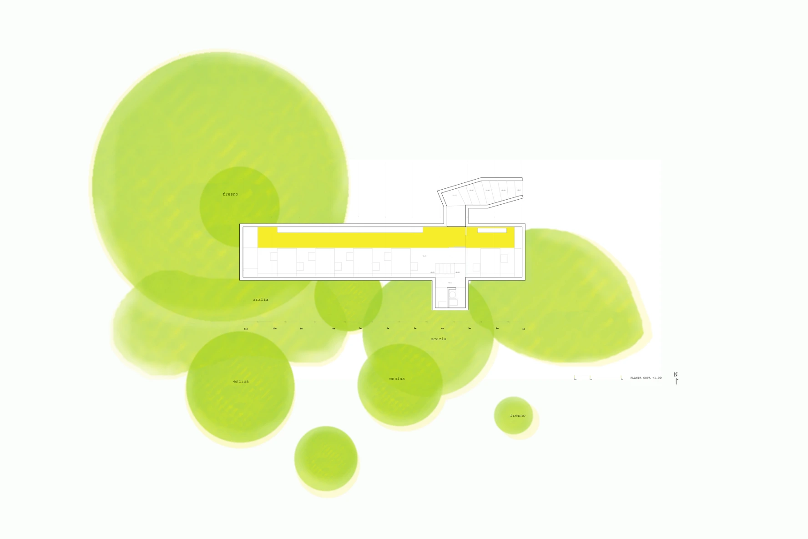
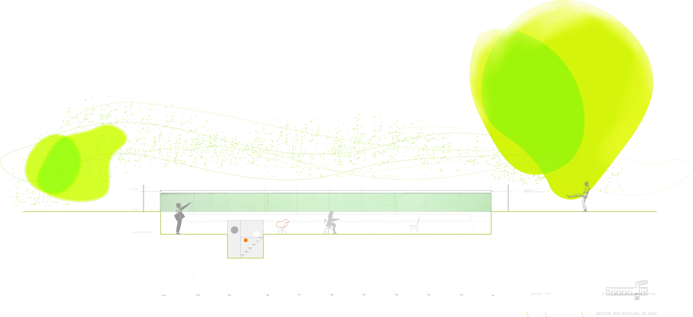

Architecture studio · 2007
Architecture Office
Selgascano
Madrid, Spain
A single elongated workspace brings the architectural team together under the trees. The transparent north side maintains a close view of the landscape, while the more enclosed south side protects the desk area from direct sunlight.
The curved enclosure treats its two sides differently: clear acrylic towards the north and insulated translucent fibreglass and polyester towards the south. Half-burying the studio sets horizontal views near ground level, making the surrounding woodland part of the daily working environment.
Selgascano: architect's account and original drawings on Archilovers ↗


Relevant connections
THINK
The studio provides a shared setting for architectural planning and concentrated desk work.
Images and drawings / 06









